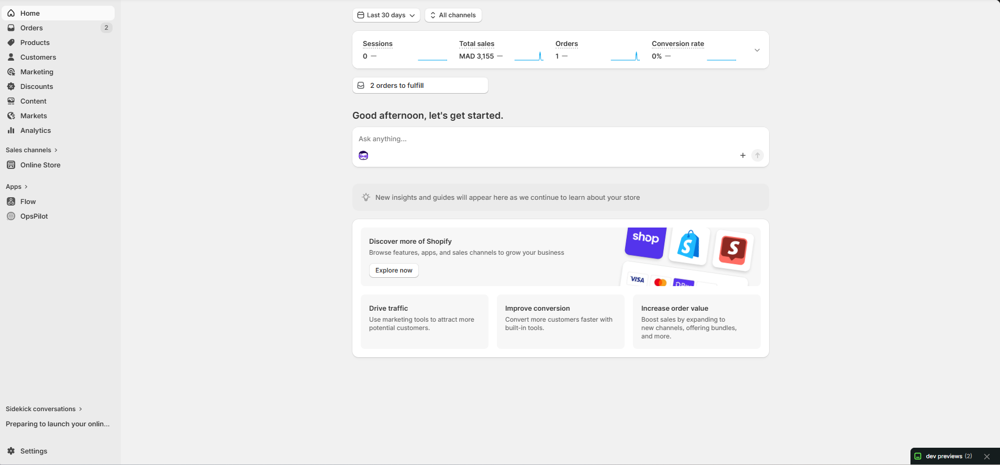
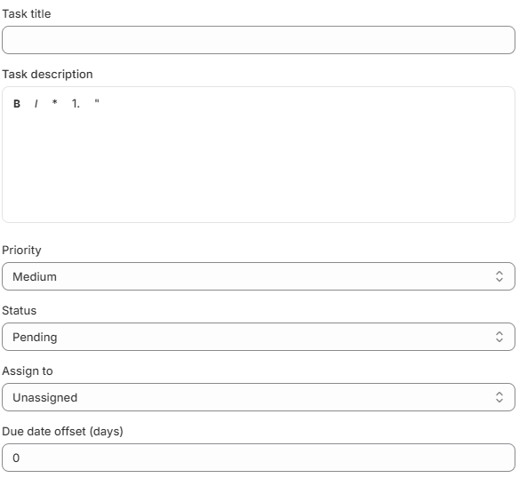
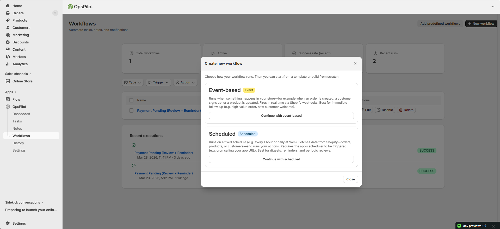
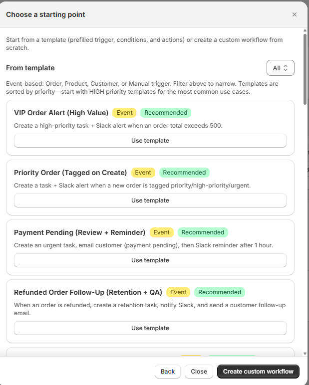
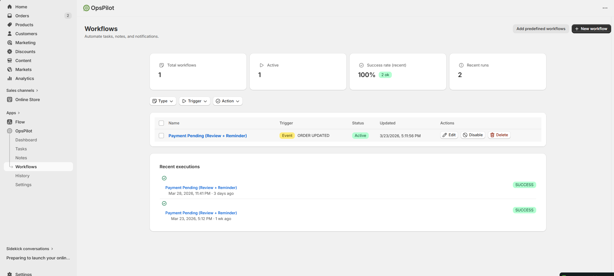
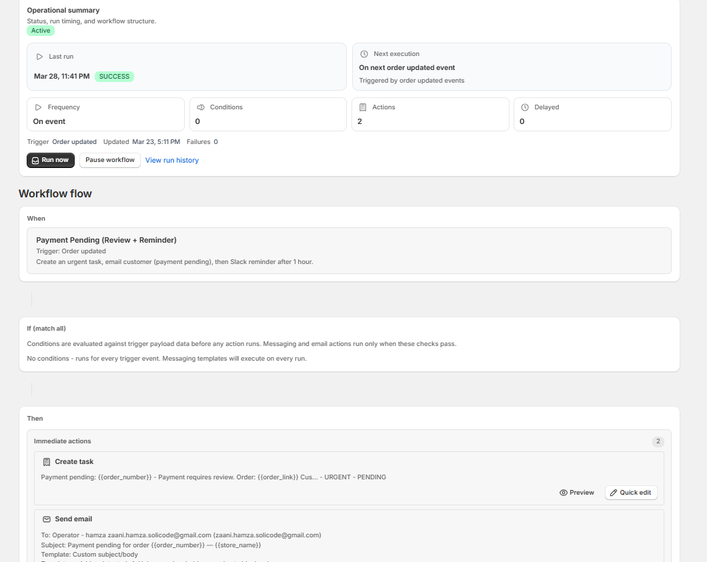

Getting Started
Install OpsPilot, take a quick tour, and create your first note, task, and workflow in minutes.

OpsPilot appears in your Shopify Admin sidebar under Apps — one-click access, no separate login.

After install, your dashboard shows real-time store health: KPIs, tasks, and automation performance.
Installing OpsPilot
First-Time Setup
When you install OpsPilot for the first time, the app automatically:
- Creates your user account (using your Shopify staff email)
- Sets up default task statuses (Pending, In Progress, Completed, etc.)
- Detects your store timezone and currency
- Prepares sample workflow templates to get you started
Quick Tour
After installation, you'll see the main navigation on the left sidebar:
| Menu Item | What It Does |
|---|---|
| 📊 Dashboard | Your store health overview: KPIs, task stats, workflow performance |
| 📝 Notes | Create and manage notes attached to orders, products & customers |
| ✅ Tasks | Create tasks, assign to team members, track progress |
| ⚡ Workflows | Set up automations that run when events happen in your store |
| ⚙️ Settings | Manage your team, task preferences, integrations & more |
| History | Activity log — see everything that happened in the app |
Your First Note
Create your first note in under 30 seconds:
Your First Task

Fill in title, description, priority, status, assignee, and due date — then click Save.

Your new task appears in the "Today's tasks" card showing open and overdue counts.
Your First Workflow



Event-based (reacts to store events) or Scheduled (runs on a timer).
28+ pre-built templates for common scenarios, or start from scratch.

View summary, run tests, check history, and pause or edit anytime.
Inviting Team Members
Your Shopify staff members are automatically detected by OpsPilot. To manage who can access the app:

Staff members are auto-detected from Shopify. Toggle roles between Admin and User to control access.